Tomáš Petříček and Vít Šefl
petricek@d3s.mff.cuni.cz | sefl@ksvi.mff.cuni.cz
@tomasp.net | https://tomasp.net
Dog <: Animal)T1 <: T2 then T1[] <: T2[]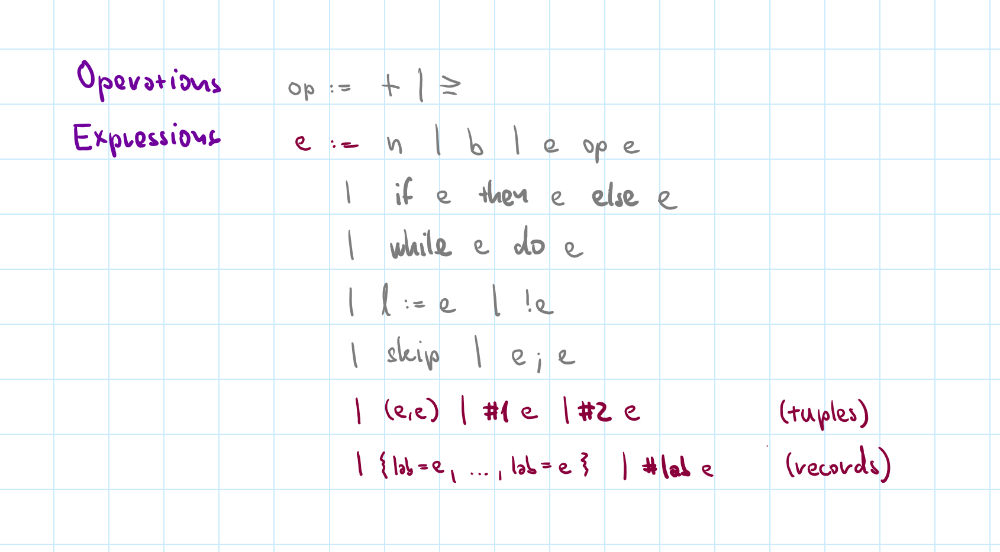
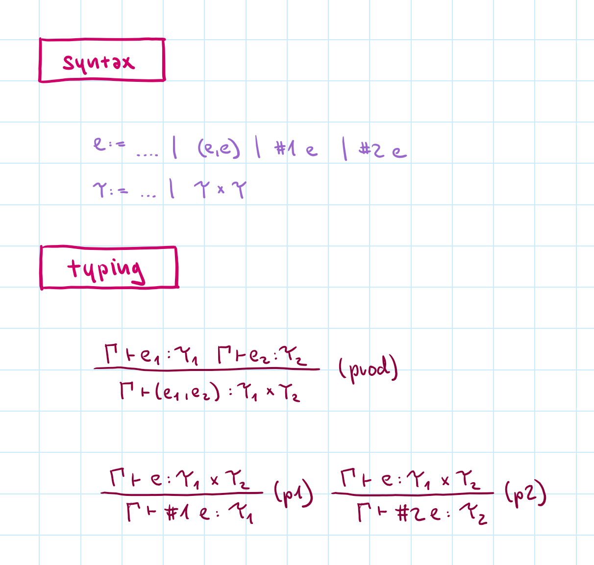
Element accessors (fst and snd) rather than pattern matching
Obvious typing rules!
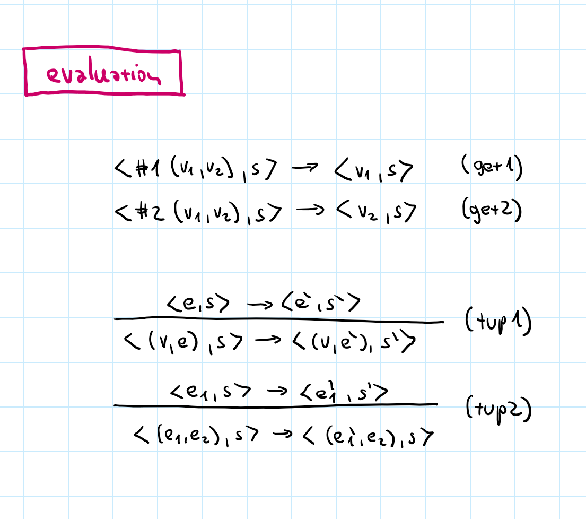
Eliminating destructor & constructor pair is a common pattern!
#1 of tuple of values
#2 of tuple of values
Specify left-to-right evaluation order of sub-expressions
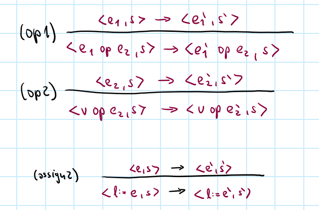
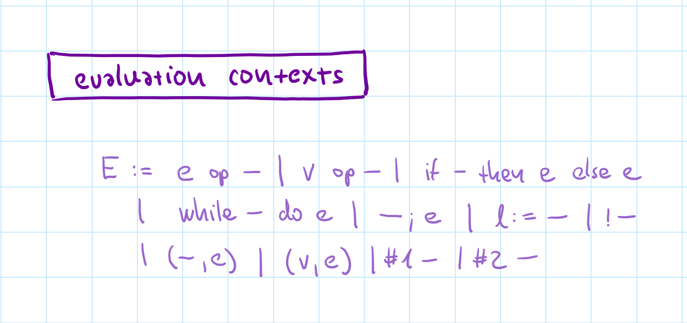
Left to right order
Specify all the positions where sub-expression can reduce
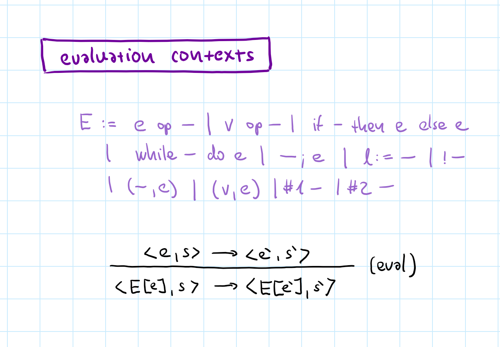
Left to right order
Specify all the positions where sub-expression can reduce
Single rule for sub-expression reduction!
Makes proofs harder
// Structural types
// (not named in advance)
let pt : { x:number, y:number }
= { x: 0, y: 0 }
// Type can be inferred
let pt = { x: 0, y: 0 }
// Field access checked
pt.x + pt.y
Structural types
as in TypeScript
Nominal types
as in ML/F# or Java
Structural types are easier - no definitions in advance
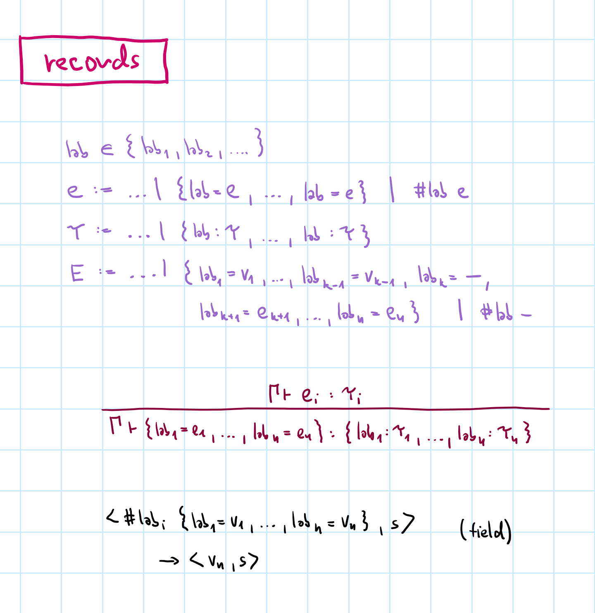
Type syntax mirrors expression syntax
Type uses lab:T
Value uses lab=e
Destructor/constructor evaluation pattern
Sub-expression reduction for free!
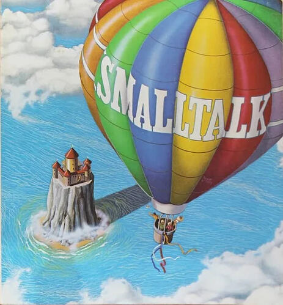
S can be used anywhere where a supertype T is expectedS <: T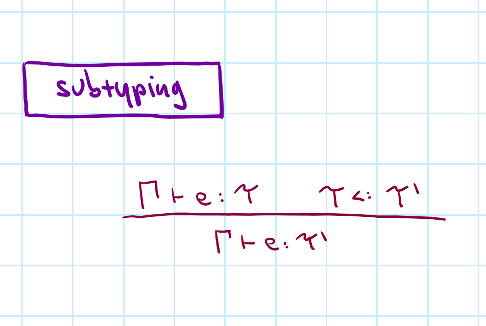
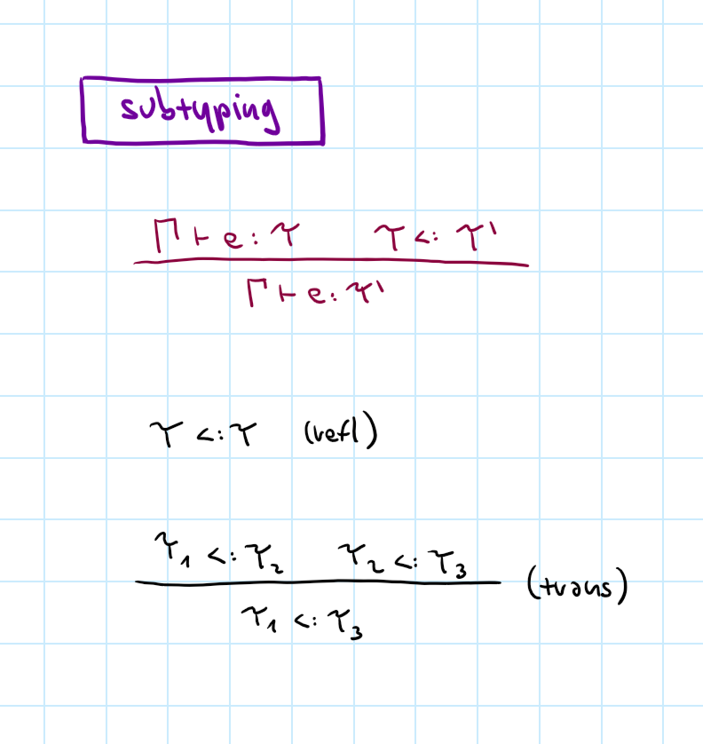
Typing judgement using subtyping relation
Derivation rules for subtyping - preorder
Neither symmetric
nor anti-symmetric
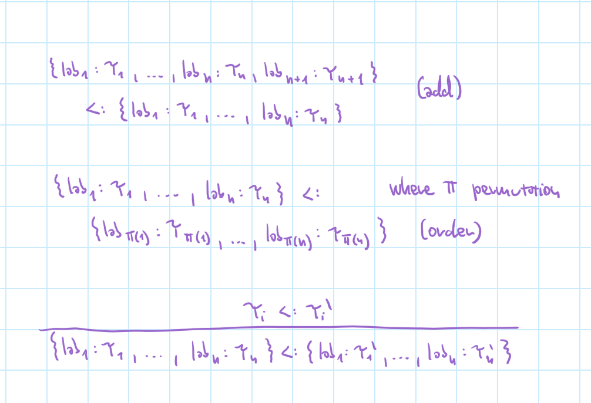
Additional field at the end
Reordering of fields
Subtypes of nested values
Often need a combination
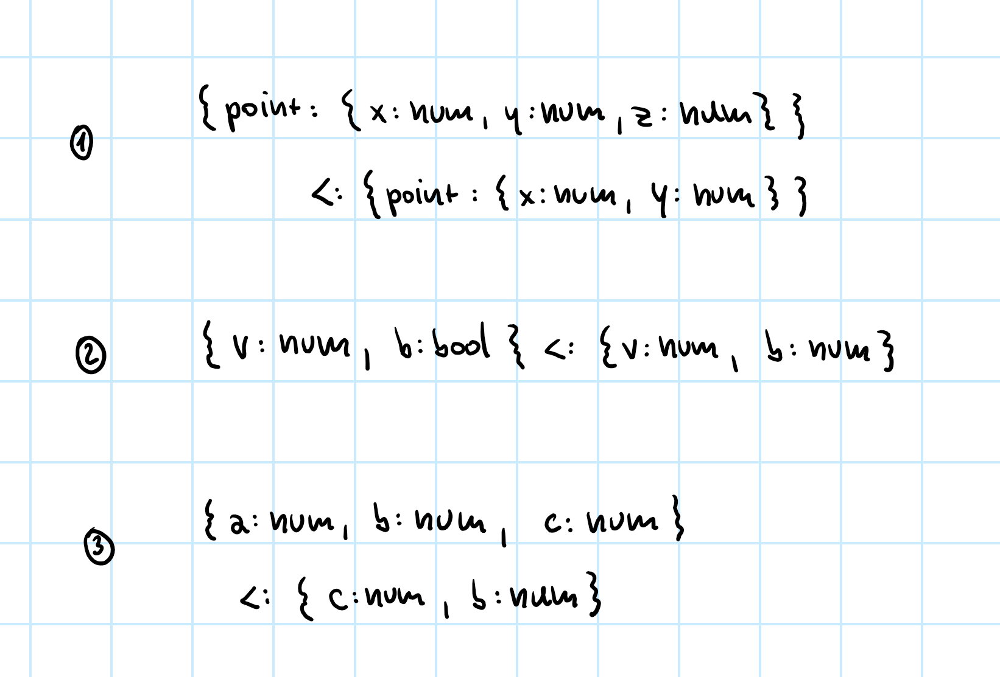
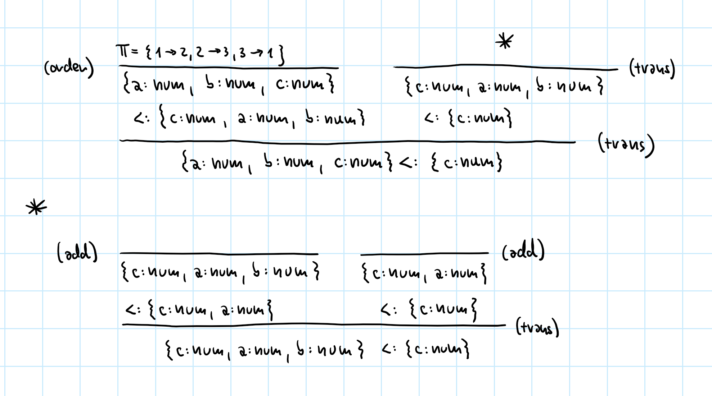
Same as typing derivation or reduction derivation
One relation can have multiple different derivations!
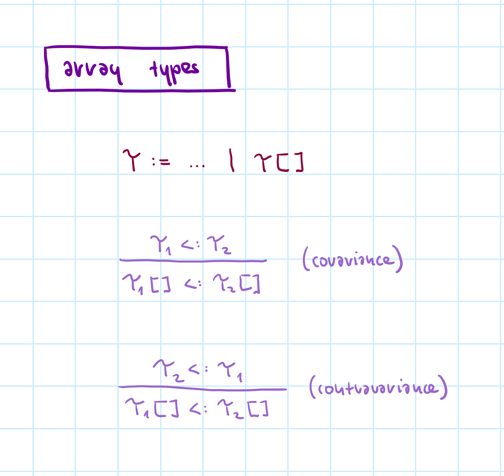
What subtyping rule
is right for arrays?
Both of them break!
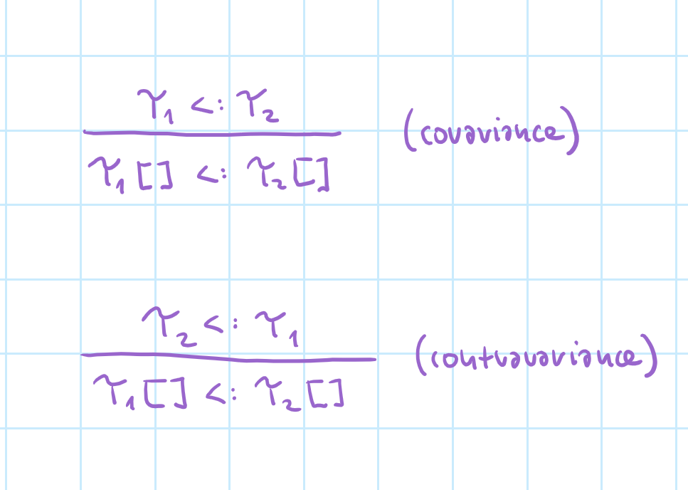
Covariance - can put Cat in Dog[]
Contravariance - can get Cat from Dog[]